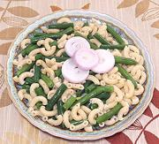

|
Simple Lunch - Pasta & VegieCalifornia | ||||
| Makes: Effort: Sched: DoAhead: |
1 # ** 45 min Prep |
This is my most common lunch, using vegetable on hand. Tasty, nutritious, very easy to make and to clean up after. As with other very simple dishes, quality of ingredients is important. | |||
|
|
8 5 1 2/3 1/2 ------ ar |
oz oz T ---- ar |
Vegetable (1) Pasta (2) Olive Oil, ExtV Salt Pepper --- Garnish Parsley, or Grated Cheese or Scallion Greens or whatever Favorites Bell Peppers Brussels Sprouts Green Beans Cauliflower Peas, frozen Lima Beans, frozen |
Recipe is sized as a generous lunch for two, or Italian pasta courses for four or side dish for 5 - but it's very easy to double, or cut in half for a single serving. Prep - (7 min)
|